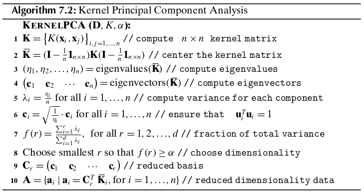

Chapter 7 Dimensionality Reduction¶
7.1 Background¶
Let the data \(\D\) consist of \(n\) points over \(d\) attributes, that is, it is an \(n\times d\) matrix, given as
Each point \(\x_i=(x_{i1},x_{i2},\cds,x_{id})^T\) is a vector in the ambient \(d\)-dimensional vector space spanned by the \(d\) standard basis vectors \(\e_1,\e_2,\cds,\e_d\), where \(\e_i\) corresponds to the \(i\).
Given any other set of \(d\) orthonormal vectors \(\u_1,\u_2,\cds,\u_d\), with \(\u_i^T\u_j=0\) and \(\lv\u_i\rv=1\) (or \(\u_i^T\u_i=1\)), we can re-express each point \(x\) as the linear combination
Note
\(\x=a_1\u_1+a_2\u_2+\cds+a_d\u_d\)
where the vector \(\a=(a_1,a_2,\cds,a_d)^T\) represents the coordinates of \(\x\) in the new basis. The above linear combination can also be expressed as a matrix multiplication:
Note
\(\x=\U\a\).
where \(\U\) is an orthonormal matrix whose \(i\)th column comprises the \(i\)th basis vector \(\u_i\).
Because \(\U\) is orthogonal, we have
which implies that \(\U^T\U=\I\).
Note
\(\a=\U^T\x\)
Becuase there are potentially infinite choices for the set of orthonormal basis vectors, one natural question is whether ther exists an optimal basis, for a suitable notion of optimality. We are interested in finding the optimal \(r\)-dimensional representation of \(\D\) with \(r\ll d\). Projection of \(\x\) onto the first \(r\) basis vectors is given as
which can be written in matrix notaion as follows
where \(\U_r\) is the matrix comprising the first \(r\) basis vectors, and \(\a_r\) is a vectgor comprising the first \(r\) coordinates. Because \(\a=\U^T\x\), restricting it to the first \(r\) terms, we get
The projection of \(\x\) onto the first \(r\) basis vectors can be compactly written as
Note
\(\x\pr=\U_r\U_r^T\x=\P_r\x\)
where \(\P_r=\U_r\U_r^T\) is the orthogonal projection matrix for the subspace spanned by the first \(r\) basis vectors. The projection matrix \(\P_r\) can also be written as the decomposition
The projection of \(\x\) onto the remaining dimensions comprises the error vector
Note
\(\dp\bs\epsilon=\sum_{i=r+1}^da_i\u_i=\x-\x\pr\)
It is worth noting that \(\x\pr\) and \(\bs\epsilon\) are orthogonal vectors:
The subspace spanned by the first \(r\) basis vectors and the subspace spanned by the remaining basis vectors are orthogonal subspaces. They are orthogonal complement of each other.
The goal of dimensionality reduction is to seek an \(r\)-dimensional basis that gives the best possible approximation \(\x_i\pr\) over all the points \(\x_i\in\D\). Alternatively, we may seek to minimize the error \(\bs\epsilon_i=\x_i-\x_i\pr\) over all the points.
7.2 Principal Component Analysis¶
Principal Component Analysis (PCA) is a technique that seeks a \(r\) -dimensional basis that best captures the variance in the data.
7.2.1 Best Line approximation¶
Assume that \(\u\) is a unit vector, and the data matrix \(\D\) has been centered by subtracting the mean \(\mu\).
The projection of the centered point \(\bar\x_i\in\bar\D\) on the vector \(\u\) is given as
where
Note
\(a_i=\u^T\bar\x_i\)
is the offset or scalar projection of \(\x_i\) on \(\u\). We also call \(a_i\) a projected point. Note that the scalar projection of the mean \(\bar\mmu\) is 0. Therefore, the mean of the projected points \(a_i\) is also zero, since
We have to choose the direction \(\u\) such that the variance of the projected points is maximized. The projected variance along \(\u\) is given as
Thus, we get
Note
\(\sg_\u^2=\u^T\Sg\u\)
where \(\Sg\) is the sample covariance matrix for the centered data \(\bar\D\).
We have to find the optimal basis vector \(\u\) that maximizes the projected variance \(\sg_\u^2\) subject to the constraint that \(\u^T\u=1\). This can be solved by introducing a Lagrangian multiplier \(\alpha\) for the constraint, to obtain the unconstrained maximization problem
Setting the derivative of \(J(\u)\) with respect to \(\u\) to the zero vector, we obtain
Note
\(\Sg\u=\alpha\u\)
The dominant eigenvector \(\u_1\) specifies the direction of most variance, also called the first principal component, that is, \(\u=\u_1\). Further, the largest eigenvalue \(\ld_1\) specifies the projected variance, that is, \(\sg_\u^2=\alpha=\ld_1\).
Minimum Squared Error Approach
The direction that maximizes the projected variance is also the one that minimizes the average squared error. The mean squared error (MSE) optimization condition is defined as
which implies
Note
\(\dp MSE=\sum_{i=1}^n\frac{\lv\bar\x_i\rv^2}{n}-\u^T\Sg\u\)
Further, we have
Note
\(\dp\rm{var}(\D)=tr(\Sg)=\sum_{i=1}^d\sg_i^2\)
Note
\(\dp MSE(\u)=\rm{var}(\D)-\u^T\Sg\u=\sum_{i=1}^d\sg_i^2-\u^T\Sg\u\)
The principal component \(\u_1\), which is the direction that maximizes the projected variance, is also the direction that minimizes the mean squared error.
7.2.2 Best 2-dimensional Approximation¶
We are now interested in the best two-dimensional approximation to \(\D\). We now want to find another direction \(\v\), which also maximizes the projected variance, but is orthogonal to \(\u_1\). The projected variance along \(\v\) is given as
We further require that \(\v\) be a unit vector orthogonal to \(\u_1\). The optimization condition then becomes
Taking the derivative of \(J(\v)\) with respect to \(\v\), and setting it to the zero vector, finally gives that \(\v\) is the second largest eigenvector of \(\Sg\).
Total Projected Variance
Let \(\U_2\) be the matrix whose columns correspond to the two principal components. Given the point \(\bar\x_i\in\bar\D\) its coordinates in the two-dimensional subspace spanned by \(\u_1\) and \(\u_2\) can be computed as follows:
Assume that each point \(\bar\x_i\in\R^d\) in \(\bar\D\) has been projected to obtain its coordinates \(\a_i\in\R^2\), yielding the new dataset \(\A\). The total variance for \(\A\) is given as
where \(\P_2\) is the orthogonal projection matrix given as
The projected total variance is then given as
Mean Squared Error
7.2.3 Best \(r\)-dimensional Approximation¶
To find the best \(r\)-dimensional approximation to \(\D\), we compute the eigenvalue of \(\Sg\). Because \(\Sg\) is positive semidefinite, its eigenvalues are non-negative and can be sorted in decreasing order
We then select the \(r\) largest eigenvalues, and their corresponding eigenvectors to form the best \(r\)-dimensional approximation.
Total Projected Variance
Mean Squared Error
Total Variance
Note
\(\dp\rm{var}(\D)=\sum_{i=1}^d\sg_i^2=\sum_{i=1}^d\ld_i\)
Choosing the Dimensionality
One criteria for choosing \(r\) is to compute the fraction of the total variance captured by the first \(r\) principal components, computed as
Note
\(\dp f(r)=\frac{\ld_1+\ld_2+\cds+\ld_r}{\ld_1+\ld_2+\cds+\ld_d}=\) \(\dp\frac{\sum_{i=1}^r\ld_i}{\sum_{i=1}^d\ld_i}=\frac{\sum_{i=1}^r\ld_i}{\rm{var}(\D)}\)
Given a certain desired variance threshold, say \(\alpha\), starting from the first principal component, we keep on adding additional components, and stop at the smallest value \(r\) for which \(f(r)\geq\alpha\), given as
Note
\(r=\min\{r\pr|f(r\pr)\geq\alpha\}\)
7.2.4 Geometry of PCA¶
Geometrically, when \(r=d\), PCA corresponds to a orthogonal change of basis, so that the total variance is captured by the sum of the variances along each of the principal direction \(\u_1,\u_2,\cds,\u_d\), and further, all covariances are zero. This can be seen by looking at the collective action of the full set of principal components, which can be arranged in the \(d\times d\) orthogonal matrix with \(\U\im=\U^T\).
Each principal component \(\u_i\) corresponds to an eigenvector of the covariance matrix \(\Sg\), which can be written compactly as
Multiply above equation on the left by \(\U\im=\U^T\) we obtain
This means that if we change the basis to \(\U\), we change the covariance matrix \(\Sg\) to a similar matrix \(\Ld\), which in fact is the covariance matrix in the new basis.
It is worth noting that in the new basis, the equation
defines a \(d\)-dimensional ellipsoid (or hyper-ellipse). The eigenvectors \(\u_i\) of \(\Sg\), that is, the principal components, are the directions for the principal axes of the ellipsoid. The square roots of the eigenvalues, that is, \(\sqrt{\ld_i}\), give the lengths of the semi-axes.
The eigen-decomposition of \(\Sg\) is
Note
\(\dp\Sg=\U\Ld\U^T=\ld_1\u_1\u_1^T+\ld_2\u_2\u_2^T+\cds+\ld_d\u_d\u_d^T=\sum_{i=1}^d\ld_i\u_i\u_i^T\)
Assuming that \(\Sg\) is invertible or nonsingular, we have
Using the fact that \(\x=\U\a\), we get
which is precisely the equation for an ellipse centered at \(\0\), with semi-axes lengths \(\sqrt{\ld_i}\). Thus \(\x^T\Sg\im\x=1\), or equivalently \(\a^T\Ld\im\a=1\) in the new principal components basis, defines an ellipsoid in \(d\)-dimensions, where the semi-axes lengths equal the standard deviations along each axis. Likewise, the equation \(\x^T\Sg\im\x=s\), or equivalently \(\a^T\Ld\im\a=s\), for different values of the scalar \(s\), represents concentric ellipsoids.
7.3 Kernel Principal Component Analysis¶
Principal component analysis can be extended to find nonlinear “directions” in the data using kernel methods. Kernel PCA finds the directions of most variance in the feature space instead of the input space.
In feature space, we can find the first kernel principal component \(\u_1\), by solving for the eigenvector corresponding to the largest eigenvalue of the covariance matrix in feature space:
where \(\Sg_\phi\), the covariance matrix in feature space, is given as
Plugging the expansion of \(\Sg_\phi\), we get
where \(c_i=\frac{\bar\phi(\x_i)^T\u_1}{n\ld_1}\) is a scalar value.
We assume that the kernel matrix \(\K\) has already been centered using
Take any point, say \(\bar\phi(\x_k)\) and multiply by \(\bar\phi(\x_k)^T\) on both sides to obtain
We can compactly represent it as follows:
If \(\eta_1\) is the largest eigenvalue of \(\bar\K\) corresponding to the dominant eigenvector \(\c\), we can verify that
which implies
Note
\(\bar\K\c=\eta_1\c\)
where \(\eta_1=n\cd\ld_1\).
If we sort the eigenvalues of \(\K\) in decreasing order \(\eta_1\geq\eta_2\geq\cds\geq\eta_n\geq 0\), we can obtain the \(j\)th principal component as the corresponding eigenvector \(\c_j\), which has to be normalized so that the norm is \(\lv\c_j\rv=\sqrt{\frac{1}{\eta_j}}\), provided \(\eta_j>0\). Also, because \(\eta_j=n\ld_j\), the variance along the \(j\)th principal component is given as \(\ld_j=\frac{\eta_j}{n}\). To obtain a reduced dimensional dataset, say with dimensionality \(r\ll n\), we can compute the scalar projection of \(\bar\phi(\x_i)\) for each point \(\x_i\) onto the principal component \(\u_j\), for \(j=1,2,\cds,r\) , as follows:
We can obtain \(\a_i\in\R^r\) as follows:
Note
\(\a_i=\bs{\rm{C}}_r^T\bar\K_i\)
where \(\bs{\rm{C}}_r\) is the weight matrix whose columns comprise the top \(r\) eigenvectors, \(\c_1,\c_2,\cds,\c_r\).
7.4 Singular Value Decomposition¶
Principal omponents analysis is a special case of a more general matrix decomposition method called Singular Value Decomposition (SVD). PCA yields the following decomposition of the covariance matrix:
SVD generalizes the above factorization for any matrix. In particular for an \(n\times d\) data matrix \(\D\) with \(n\) points and \(d\) columns, SVD factorizes \(\D\) as follows:
Note
\(\D=\bs{\rm{L\Delta R}}^T\)
The columns of \(\bs{\rm{L}}\) are called the left singular vectors, and the columns of \(\bs{\rm{R}}\) are called the right singular vectors. The matrix \(\bs{\rm{\Delta}}\) is defined as
The entries \(\Delta(i,i)=\delta_i\) along the main diagonal of \(\Delta\) are called the singular value of \(\D\).
One can discard those left and right singular vectors that correspond to zero singular values, to obtain the reduced SVD as
Note
\(\D=\bs{\rm{L}}_r\bs{\rm{\Delta}}_r\bs{\rm{R}}_r^T\)
The reduced SVD leads directly to the spectral decomposition of \(\D\), given as
Note
\(\dp\D=\sum_{i=1}^r\delta_i\bs{l}_i\bs{\rm{r}}_i^T\)
By selecting the \(q\) largest singular values \(\delta_1,\delta_2,\cds,\delta_q\) and the corresponding left and right singular vectors, we obtain the best rank \(q\) approximation to the original matrix \(\D\). That is, if \(\D_q\) is the matrix defined as
then it can be shown that \(\D_q\) is the rank \(q\) matrix that minimizes the expression
where \(\lv\A\rv_F\) is called the Frobenius Norm of the \(n\times d\) matrix \(\A\), defined as